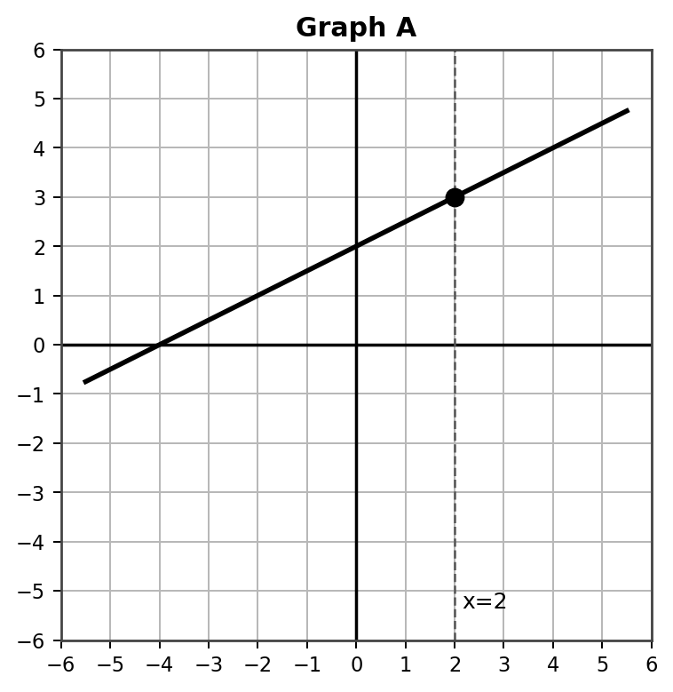
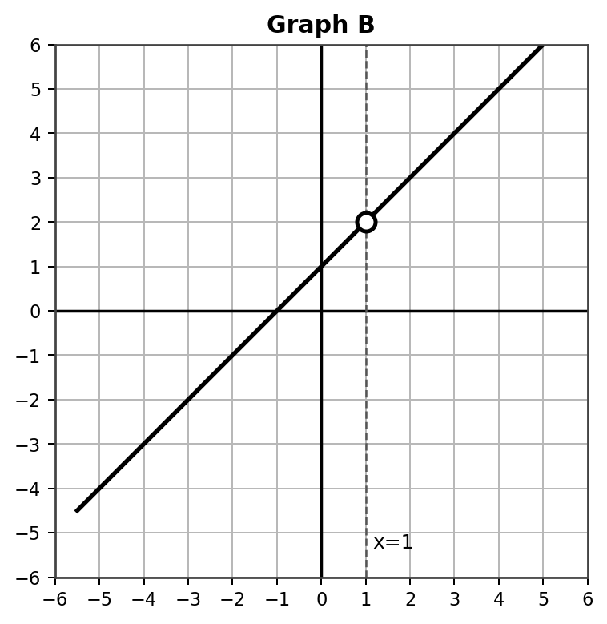
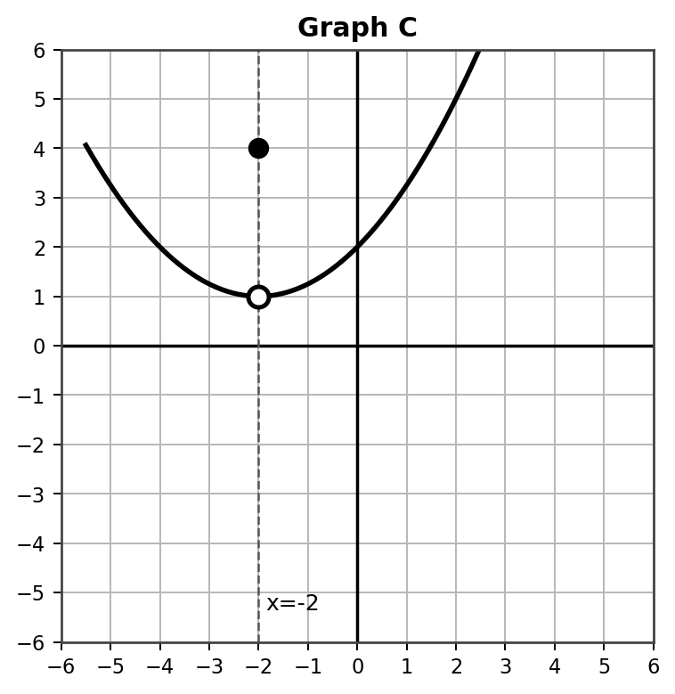
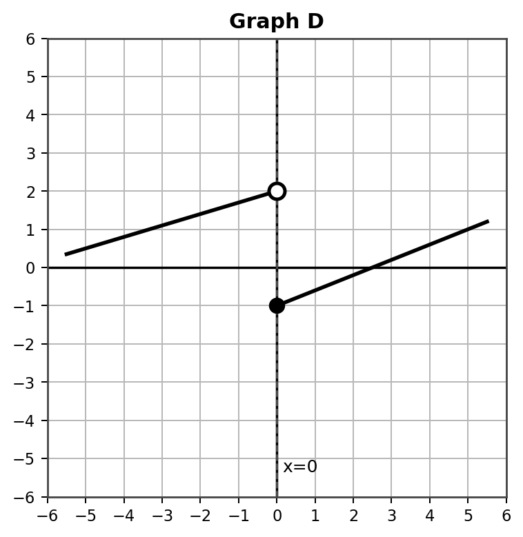
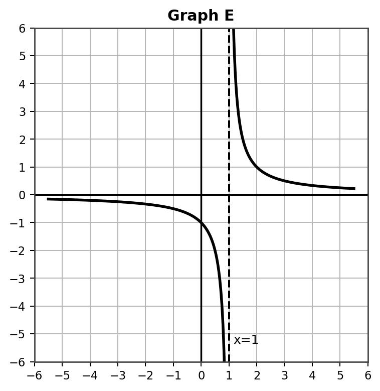
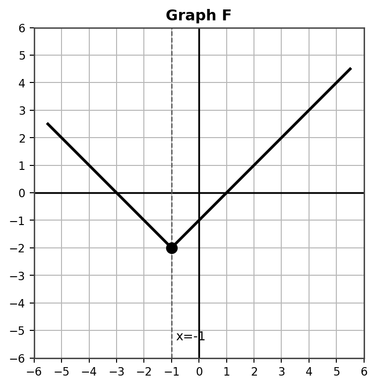

Investigation: What does a graph approach, and does the actual point matter?
Time: 15-20 minutes
Format: Graph behavior sort, partner investigation, and whole-class discussion
Today you will compare what a graph does from the left, what it does from the right, and what happens exactly at the target $x$-value.
$\displaystyle \lim_{x\to a^-} f(x) \qquad \lim_{x\to a^+} f(x) \qquad f(a)$
By the end, you should be able to explain when a two-sided limit exists and when the actual function value is different from the limit.
For each graph, your group will look near the marked target $x$-value. Record what the graph approaches from each side and what the function value is exactly at the target.
Left-hand behavior: Follow the graph as $x$ approaches the target from smaller $x$-values.
Right-hand behavior: Follow the graph as $x$ approaches the target from larger $x$-values.
Function value: Look for the filled-in point at the target $x$-value. If there is no filled-in point, the function value may be undefined.
Analyze each graph. Then classify its behavior and decide whether the two-sided limit exists at the target $x$-value.

| Behavior from the Left | Behavior from the Right | Actual Function Value | Does the Limit Exist? |
|---|---|---|---|
Sort this graph: continuous, hole, point value difference, jump, vertical asymptote, or corner?

| Behavior from the Left | Behavior from the Right | Actual Function Value | Does the Limit Exist? |
|---|---|---|---|
Sort this graph: continuous, hole, point value difference, jump, vertical asymptote, or corner?

| Behavior from the Left | Behavior from the Right | Actual Function Value | Does the Limit Exist? |
|---|---|---|---|
Sort this graph: continuous, hole, point value difference, jump, vertical asymptote, or corner?

| Behavior from the Left | Behavior from the Right | Actual Function Value | Does the Limit Exist? |
|---|---|---|---|
Sort this graph: continuous, hole, point value difference, jump, vertical asymptote, or corner?

| Behavior from the Left | Behavior from the Right | Actual Function Value | Does the Limit Exist? |
|---|---|---|---|
Sort this graph: continuous, hole, point value difference, jump, vertical asymptote, or corner?

| Behavior from the Left | Behavior from the Right | Actual Function Value | Does the Limit Exist? |
|---|---|---|---|
Sort this graph: continuous, hole, point value difference, jump, vertical asymptote, or corner?
| Graph | Behavior Type | Left-Hand Limit | Right-Hand Limit | $f(a)$ | Two-Sided Limit? |
|---|---|---|---|---|---|
| A | |||||
| B | |||||
| C | |||||
| D | |||||
| E | |||||
| F |
This investigation helps students discover that a limit is about approaching behavior, not simply the value of the function at a point. Students sort common graphical behaviors and compare left-hand limits, right-hand limits, and function values.
Say: “Today we are not asking, ‘What is the dot?’ first. We are asking, ‘What height is the graph approaching from the left and from the right?’ The dot matters for $f(a)$, but approaching behavior determines the limit.”
Model: Use Graph A quickly. Trace from both sides toward $x=2$ and show that both sides approach the same height.
Final summary: A two-sided limit exists when the left-hand and right-hand limits approach the same value. The function value $f(a)$ may be the same, different, or undefined. A hole does not automatically prevent a limit from existing, but a jump prevents the two-sided limit because the sides approach different values.
Closure prompt: “How would you explain the difference between $\lim_{x\to a} f(x)$ and $f(a)$ to a student who keeps looking only at the filled-in dot?”
Question 1: Can the graph have a hole and still have a limit?
Answer: Yes. If both sides approach the same height, the limit exists even if the function is not defined at that exact point.
Question 2: Can the graph have a filled-in point at one height but approach a different height?
Answer: Yes. The filled point gives $f(a)$, but the limit depends on nearby graph behavior.
Question 3: What would make a left-hand and right-hand limit disagree?
Answer: A jump or different branch behavior can make the two sides approach different heights.
Question: Record left-hand behavior, right-hand behavior, actual function value, and whether the limit exists at $x=2$.
Answer: Left-hand limit $=3$, right-hand limit $=3$, $f(2)=3$, and $\lim_{x\to2} f(x)=3$. Behavior type: continuous.
Question: Record left-hand behavior, right-hand behavior, actual function value, and whether the limit exists at $x=1$.
Answer: Left-hand limit $=2$, right-hand limit $=2$, $f(1)$ is undefined, and $\lim_{x\to1} f(x)=2$. Behavior type: hole.
Question: Record left-hand behavior, right-hand behavior, actual function value, and whether the limit exists at $x=-2$.
Answer: Left-hand limit $=1$, right-hand limit $=1$, $f(-2)=4$, and $\lim_{x\to-2} f(x)=1$. Behavior type: point value difference.
Question: Record left-hand behavior, right-hand behavior, actual function value, and whether the limit exists at $x=0$.
Answer: Left-hand limit $=2$, right-hand limit $=-1$, $f(0)=-1$, and $\lim_{x\to0} f(x)$ does not exist because the one-sided limits are different. Behavior type: jump.
Question: Record left-hand behavior, right-hand behavior, actual function value, and whether the limit exists at $x=1$.
Answer: From the left, the graph decreases without bound; from the right, it increases without bound. $f(1)$ is undefined. The finite two-sided limit does not exist. Behavior type: vertical asymptote.
Question: Record left-hand behavior, right-hand behavior, actual function value, and whether the limit exists at $x=-1$.
Answer: Left-hand limit $=-2$, right-hand limit $=-2$, $f(-1)=-2$, and $\lim_{x\to-1} f(x)=-2$. Behavior type: corner.